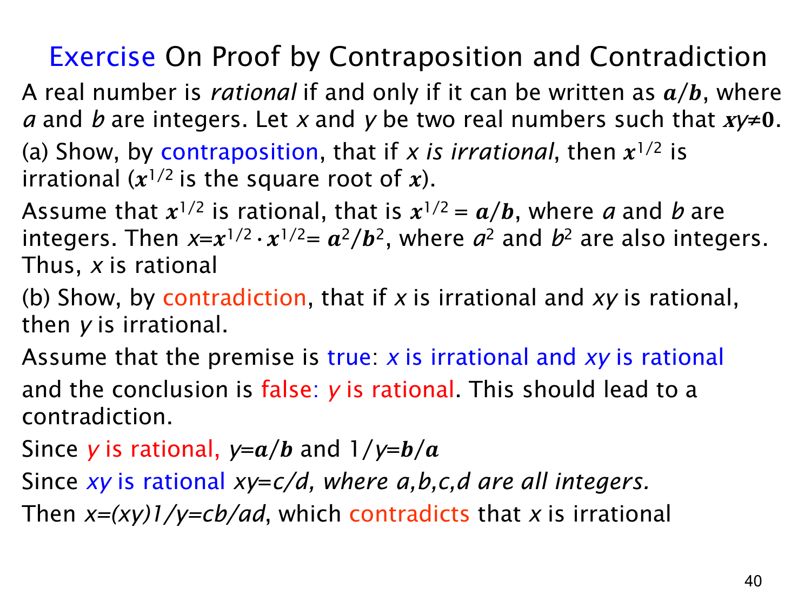

查看这一页课件

两道练习：逆否证明与反证法
本页用有理数定义练习两种间接证明。按定义，实数能表示为 a/b（a,b∈Z，b=0）才是有理数。课件设 x,y 为实数且 xy=0，所以 x、y 各自都非零。
(a) 若 x 无理，则 x 无理。这句话作为实数命题，还需要补充 x≥0，否则负的无理数没有实数平方根。对有实数平方根的 x，用逆否法：假设 x 有理，可写 x=a/b，其中 a,b 是整数且 b=0。于是
x=(x)2=b2a2.
a2,b2 是整数，b2=0，所以 x 有理。这证明了“x 有理 ⇒x 有理”，也就证明了原命题在 x 为实数的范围内成立。课件原句未写 x≥0，应留意这个定义域条件。
(b) 若 x 无理且 xy 有理，则 y 无理。用反证法，同时假设前件为真而后件为假，即 x 无理、xy 有理、y 有理。设 y=a/b，xy=c/d，其中 a,b,c,d 为整数且 b,d=0。由 xy=0 可知 y=0，故 a=0，可以取倒数 1/y=b/a。于是
x=(xy)y1=dc⋅ab=adcb.
分子分母均为整数且 ad=0，这表明 x 有理，与假设“x 无理”矛盾。所以 y 必须无理。此题中 xy=0 是必要的：它保证除以 y 合法；若 y=0，无理的 x 与有理的 xy=0 可以同时出现，却得不到“y 无理”。
查看本页勘误
L1.3 第 40 页：平方根定义域与分母条件
课件 (a) 将“若 x 无理，则 x1/2 无理”作为关于实数 x 的命题，但已给条件 xy=0 只保证 x=0，没有保证 x≥0。负的无理数（例如 −2）没有实数平方根；若沿用本页的实数论域，命题应补充 x≥0（结合 xy=0，实际为 x>0）。补充后，页中的逆否证明有效。
本页有理数定义还应明确表示式 a/b 的分母 b=0。(b) 中写 1/y=b/a 时需要 a=0；这由 xy=0 和 y=a/b 推出。取 xy=c/d 时也需 d=0。这些条件已在逐页讲解中补全，原课件图和讲解原文保持不变。